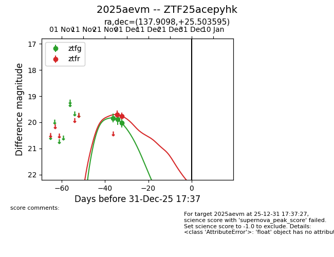
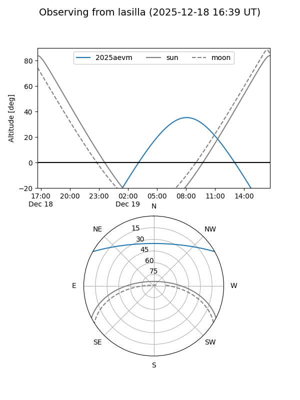
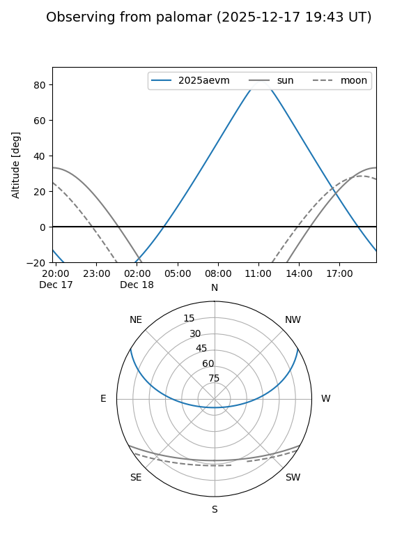
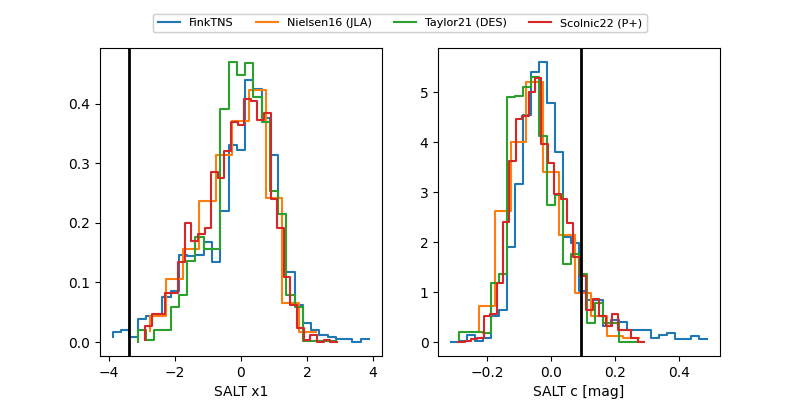

2025aevm
Target 2025aevm at 2025-12-31 16:59
Aliases and brokers:
FINK:
Lasair:
ALeRCE:
TNS:
YSE:
alt names
ZTF25acepyhk (ztf,fink_ztf)
2025aevm (tns,yse)
Coordinates:
equatorial (ra, dec) = 137.9098,+25.50360
equatorial (HMS+DMS) = 09:11:38.36,+25:30:12.94
galactic (l, b) = (201.6912,+41.12046)
Flags:
Photometry:
last ztfg=20.03, ztfr=19.76
3 ztfg, 2 ztfr detections
Lightcurve

Visibility


Additional plots
